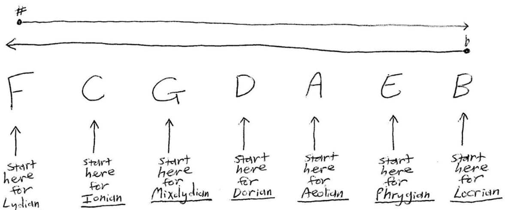

Keys: Work Out Any Key Signature for Any Mode in Seconds
Key = scale/mode
Key signature = sharps (♯) or flats (♭) in a key
The Key Signature Killing Machine™ is one of the most powerful hacks.
It’s based on the "circle of fifths" but goes way beyond the circle’s limitations.
In seconds, the Killing Machine will give you the key signature (and therefore all the notes) of any scale, while also showing you which scales don’t exist.
Without further ado, here it is: F C G D A E B

Instructions:
-
Start on the respective "white note" key (the one with no ♯ or ♭) for your scale/mode - these are written below the Killing Machine.
-
If the root of your scale/mode is a natural note (no ♯ or ♭): Locate the root of your key, then count each note until you reach that root (going right means you’ll have ♯s in your key, and going left gives you ♭s) - don’t count the starting "white note" key, as it has zero ♯ and ♭.
-
If the root of your key is a ♯ or ♭ note: Count right for ♯ and left for ♭ until you reach the end on either side, then loop around and continue, but now each note has an invisible ♯ (if you were going right) or ♭ (if you were going left) - stop counting once you reach the root of your key.
-
When you arrive at the root of your key, the amount you counted away from the "white note" key is the number of ♯s or ♭s in your scale/mode - remember, if you went right you’ll have ♯s and left you’ll have ♭s.
-
Lastly, what are the actual ♯s or ♭s in your scale/mode?
For keys with ♯s, your first ♯ is always F, then go right and add as many as you need. For keys with ♭s, your first ♭ is always B, then go left and add as many as you need.
Scales/modes have 7 notes, so if you count more than 7 ♯s or ♭s, that key does not exist, and you need to use the enharmonic of its root instead (e.g. G♯ Ionian would have 8 ♯s, which means it does not exist; the Ionian from that root note needs to be called A♭ Ionian instead).